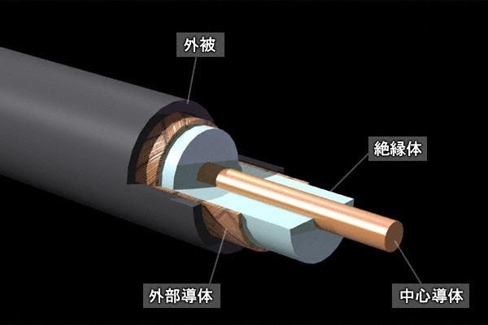
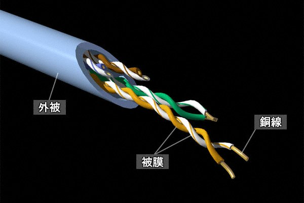
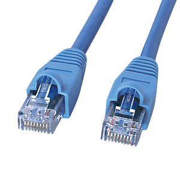
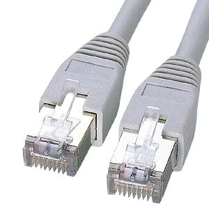
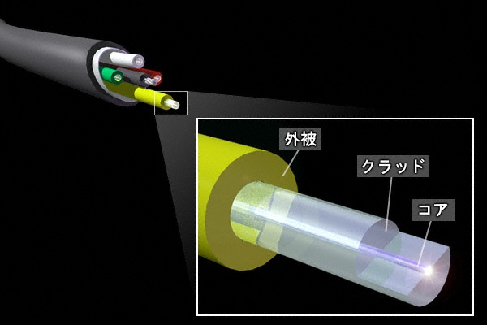

Ethernet LAN - part 3
イーサネットの伝送メディア
イーサネットでは、コンピュータ間で通信する際に使用する伝送メディアには、有線と無線の2種類が あります。有線の場合は同軸ケーブル、UTPケーブル、STPケーブル、光ファイバーの媒体があります。
イーサネット ： 同軸ケーブル
同軸ケーブルは10Base5、10Base2で使用されていたケーブルであることから、現在のLANで見ることは ないですが、テレビ受信機とアンテナとを接続する給電線や電子機器内部の配線として使用されています。

参考画像 ： IPA（情報処理推進機構） 教育用画像素材集サイト https://www2.edu.ipa.go.jp/gz/イーサネット ： UTPケーブル
UTPケーブルは、最も使用されているLANケーブルです。銅線を2本ずつより合わせて4ペアで構成されて います。ペアとなる2本の１本が電圧の「＋」、もう一本が電圧の「－」になり、電圧を変化させることで 「0」と「1」のデジタル通信でのデータ送受信を可能にしています。UTPは、Unshielded Twisted Pair というその名のとおり、シールドがされていない分、STPケーブルよりも安価ですがノイズには弱いです。

参考画像 ： IPA（情報処理推進機構） 教育用画像素材集サイト https://www2.edu.ipa.go.jp/gz/UTPケーブルは品質によりカテゴリ分けされています。イーサネットで使用されるカテゴリは3以上です。 カテゴリ（CAT)は数字が上がるごとよってケーブル品質もあがりますが、コストも上がることになります。
| カテゴリ | 最大周波数 | 主な用途 |
|---|---|---|
| CAT1 | - | 電話線 |
| CAT2 | 1MHz | 低速なデータ通信 |
| CAT3 | 16MHz | 10Base-T、100BaseT4、トークンリング(4Mbps) |
| CAT4 | 20MHz | CAT3までの用途、トークンリング(16Mbps)、ATM(25Mbps) |
| CAT5 | 100MHz | CAT4までの用途、100Base-TX、ATM(156Mbps) |
| CAT5e | 100MHz | CAT5までの用途、1000Base-T |
| CAT6 | 250MHz | CAT5eまでの用途、10GBase-T（最大伝送距離55m)、ATM(622Mbps)、ATM(1.2Gbps) |
| CAT6a | 500MHz | CAT6までの用途。10GBase-T（CAT6を改良したことにより最大伝送距離を伸ばす） |
| CAT7 | 600MHz | CAT6aまでの用途。10GBase-T（現在のところSTPケーブルのみ） |
STP（Shielded Twisted Pair）ケーブルは、その名の通り8本の銅線に対して「シールド」されており 対ノイズという点では優れていますが、その分コストは高くなります。工場などのノイズの多い場所や 高い周波数が求められる10GBaseTの通信でよく使用されます。STPケーブルもUTPケーブルも、同じ RJ-45のコネクタを使用することから、一見そのケーブルがSTPなのかUTPケーブルかは分からないです。

LANケーブル （ UTPケーブル )
LANケーブル （ STPケーブル )
イーサネット ： RJ-45コネクタ
RJ-45とはケーブルを接続するコネクタ形状の１つです。イーサネットケーブルだけではなく、ISDN回線 などにも使用されます。電話回線で使用されるRJ-11に形状が似ていますがRJ-45の方が一回り大きいです。 そのRJ-45コネクタの図はこちら（非常に分りやすい）の通りです。UTPケーブルの両端に、このRJ-45を 取り付けることにより、ネットワーク機器やパソコンのLANカードにケーブル接続ができるようになります。
UTPケーブルの中の8本の銅線は、EIA/TIA-568規格によって、どの色とペアとなりRJ-45コネクタのどの ピンに結線されるのかを定義しています。EIA/TIA-568規格には、EIA/TIA-568-A と EIA/TIA-568-B の 2つの規格がありこの規格ごとにピン配列が異なります。なお、ストレートケーブルを作成したい場合には RJ-45の両端を「EIA/TIA-568-B」のピン配列にします。クロスケーブルを作成したい場合には、一方の RJ-45のコネクタを「EIA/TIA-568-A」にし、もう一方のRJ-45のコネクタを「EIA/TIA-568-B」にします。
| EIA/TIA-568のピン配列 | ||||||||
|---|---|---|---|---|---|---|---|---|
| 規格 | 1 | 2 | 3 | 4 | 5 | 6 | 7 | 8 |
| EIA/TIA-568-A | 白緑 | 緑 | 白橙 | 青 | 白青 | 橙 | 白茶 | 茶 |
| EIA/TIA-568-B | 白橙 | 橙 | 白緑 | 青 | 白青 | 緑 | 白茶 | 茶 |
イーサネット ： 光ファイバーケーブル
光ファイバーは、コンピュータの電気信号をレーザーを使用して光信号に変換し、生成されたレーザー光を 光ファイバーケーブルに通してデータの送受信をします。下図の先端のレーザー光に「データ」があります。 光ファイバーはコアとクラッドの2層で構成されており、材質には石英ガラスやプラスチックを使用します。
下図の通り、コアはクラッドに包まれて「光」は光ファイバーケーブルのコアを透過することが分かります。

参考画像 ： IPA（情報処理推進機構） 教育用画像素材集サイト https://www2.edu.ipa.go.jp/gz/光ファイバーケーブルは用途に応じてシングルモードファイバーとマルチモードファイバーに分類されます。
| 光ファイバーケーブル | |
|---|---|
| MMF (マルチモードファイバ） | 光ファイバーケーブルの材質として、プラスチックも利用できるため安価で折り曲げにも強い。 SMFに比べると長距離伝送には不向きのため、企業ネットワークなどで構内通信に使用される。 |
| SMF (シングルモードファイバ） | 光ファイバーケーブルの材質として、ガラス繊維を使用する必要があるため高価で配線が難。 長距離伝送が可能なため、都市間の接続や基幹通信網などで使用されるのが一般的である。 |